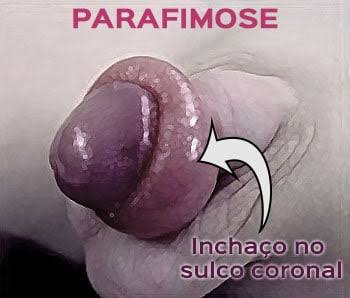

Alguns passos indispensáveis na higiene íntima do homem são:
1. Enxugar o pênis depois de urinar: Embora muitos homens pensem que não é preciso enxugar o pênis, isso não é verdade, pois a umidade e restos de urina que ficam podem conduzir ao desenvolvimento de fungos e surgimento de infecções.
Assim, o ideal é que, depois de urinar, se passe um quadradinho de papel higiênico na abertura do pênis, para enxugar restos de xixi, antes de colocar de novo na cueca.
2. Lavar adequadamente o pênis no banho:
Para lavar adequadamente deve-se retrair o prepúcio, que é a pele que recobre a glande do pênis, lavando em seguida com sabonete íntimo com com pH entre 5 e 6, que deve ser removido com água abundante.
É importante remover todas as secreções brancas, que são naturalmente produzidas pelo pênis, lavando todos as possíveis dobras da glande. Esta lavagem deve ser feita, pelo menos, uma vez por dia, durante o banho.
Depois do banho, também é importante secar bem o pênis com a toalha, para diminuir a umidade no local e evitar o surgimento de infecções por fungos ou bactérias.
3. Lavar o pênis depois da relação sexual: Depois de toda a relação sexual, o órgão sexual deve ser lavado adequadamente para garantir a remoção dos resíduos de esperma e outras secreções. Além disso, esta lavagem também é muito importante para remover os resíduos de lubrificante do preservativo que possa ter sido utilizado durante a relação sexual.
4. Trocar de cueca sempre que necessário: Para manter uma boa higiene, é importante tocar de cueca após atividades físicas, relações sexuais e após o banho. Além disso, as cuecas devem ser sempre de algodão, pois os materiais sintéticos dificultam a transpiração da pele e aumentam acúmulo de suor, o que aumenta o risco de infecções ou doenças no pênis.
Os pais e mães também devem ficar atentos à higiene das crianças. A limpeza deve acontecer durante o banho, com sabonetes neutros e água corrente. Muitos meninos nascem sem conseguir ou com dificuldade de expor a glande. Nesses casos, é preciso exercitar o local com movimentos delicados e, aos poucos, o prepúcio abre e expõe a glande.
Algumas doenças que a falta da higienização íntima causam:
A higienização masculina é uma prática fundamental para o bem-estar e a saúde geral. Manter uma região limpa e livre de bactérias e germes não apenas previne infecções e mau odor, mas também contribui para o conforto diário e a autoconfiança. Além disso, uma boa higiene íntima é essencial para promover relações sexuais saudáveis e prevenir problemas como irritações e infecções transmitidas sexualmente. Portanto, dedicar um tempo para cuidar da higiene íntima masculina é um investimento significativo para manter uma vida saudável e feliz.